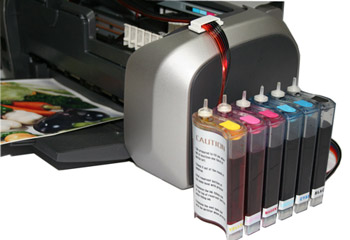

СНПЧ - простое переоборудование принтера.

Если у вас есть ваш любимый принтер, и он не оборудован системой непрерывной подачи чернил - немедленно устраняйте такой непорядок! Установка такой системы позволит вам сэкономить на эксплуатации принтера до 600-800,
и более, процентов ваших кровных денежек.
Изобретение системы принтера и МФУ с СНПЧ было предназначено, прежде всего, для удешевления расходных материалов принтера. После установки этой системы, отпадает необходимость постоянных покупок очень дорогих оригинальных картриджей с чернилами.
Такая система является довольно простым, легко устанавливаемым устройством, даже неподготовленным пользователем. Как правило, такое изделие продаётся в компьютерных магазинах в виде конструктора с подробной инструкцией,
поясняющими рисунками и схемами. Обычно, продаваемые наборы имеют примерно одинаковую комплектацию.
Четыре или шесть ёмкостей (доноров) для чернил, в зависимости от количества применяемых в принтере цветов. Вместимость доноров бывает от 90 до 250 и более миллилитров. Доноры устанавливаются снаружи принтера.
Два, четыре или шесть картриджей для подачи чернил непосредственно к печатающим головкам. В некоторые наборы, вместо картриджей кладут четыре или шесть, так называемых, капсул. Их назначение, такое, как и, картриджей.
Есть наборы, не комплектуемые картриджами и капсулами. При продаже компьютеров в минске
на cooler.by, можно купить принтер уже с снпч.
Стандартная комплектация наборов для переоборудования принтера:
Силиконовый шлейф, состоящий из четырёх или шести, склеенных между собой, эластичных трубочек. Шлейф предназначен для подачи чернил от доноров к картриджам или капсулам.
Силиконовые втулки и трубчатые силиконовые уголки для уплотнений в местах соединения шлейфа.
Пластиковые кронштейны и зажимы, а так же кусочки самоклеящейся ленты, для крепления шлейфа на конструкциях принтера.
Два или четыре медицинских шприца с иглами, для заполнения установленной системы чернилами.
Одно сверло, для проделывания отверстий в картриджах.
Четыре или шесть пластиковых бутылочки с чернилами.
Бумажные салфетки и пара перчаток, для защиты рук от чернил во время установки системы.
Некоторые наборы комплектуются электронными чипами, для блокировки или разблокировки заводских настроек принтеров.
Все эти предметы очень легко устанавливаются на принтер потребителем в течение двух часов, а подготовленным специалистом - менее чем за один час.
После этого, ваш любимый принтер превращается не только в отличный инструмент для изготовления полиграфической продукции, но и становится прекрасным средством для экономии ваших денег, потому что наличие этой системы,
снижает затраты на приобретение расходных материалов для него в 30 раз.
Переоборудуйте ваш принтер, не задумываясь. На этом вы, действительно, сэкономите значительно больше потраченного!
Следующая статья:
Влияние монитора на зрение.